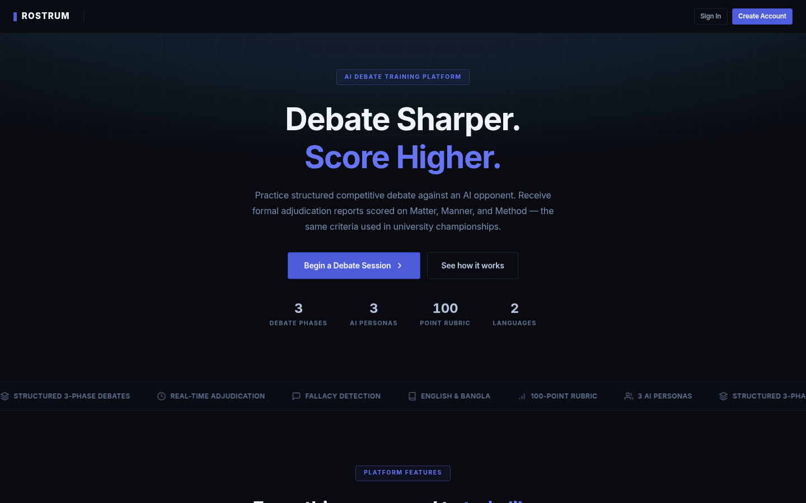
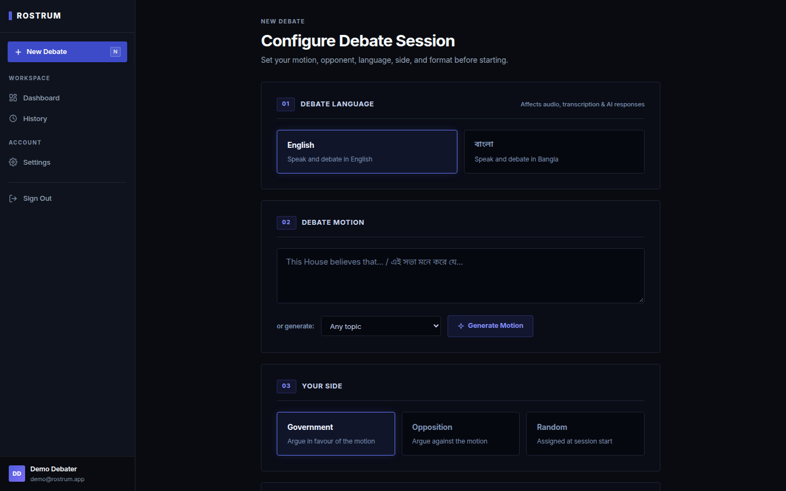
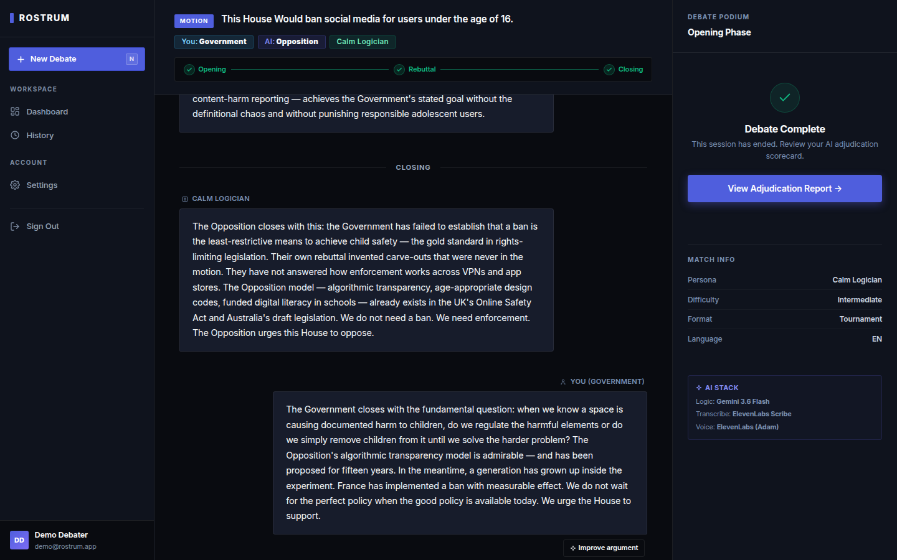
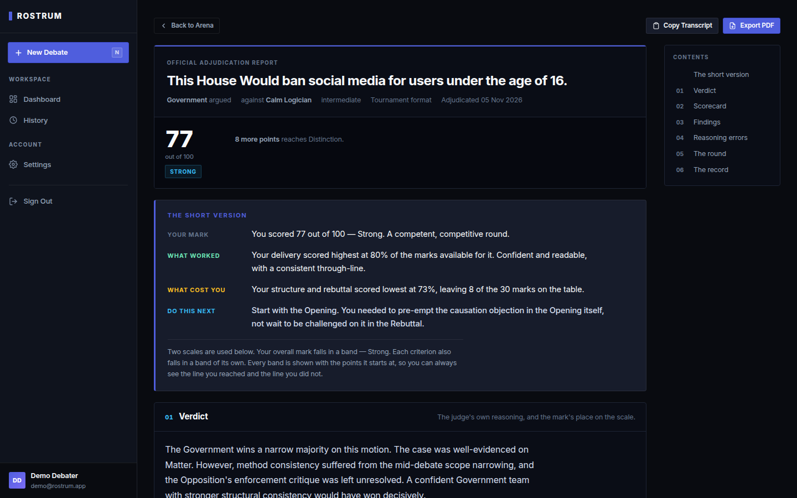
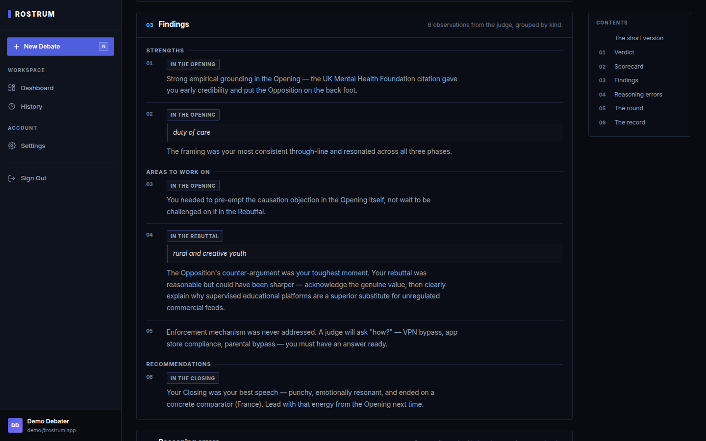
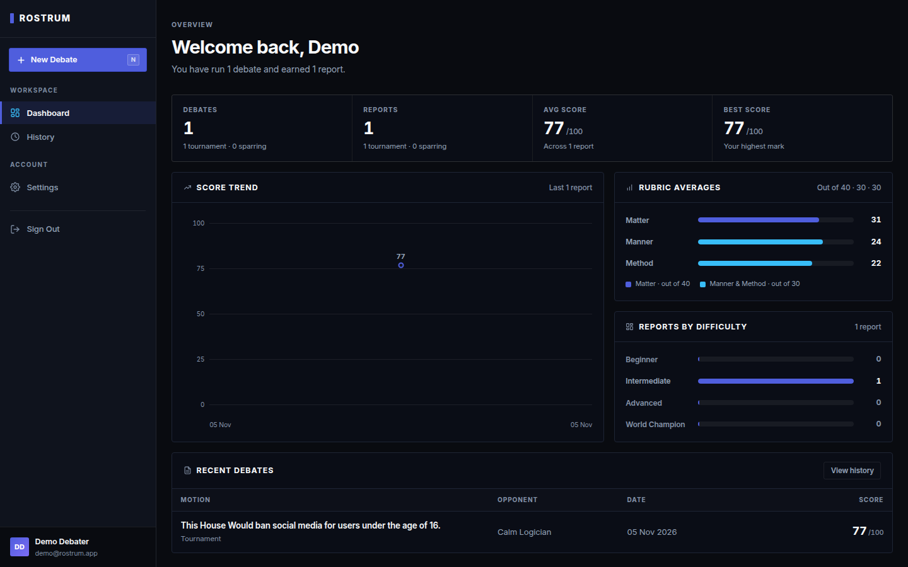
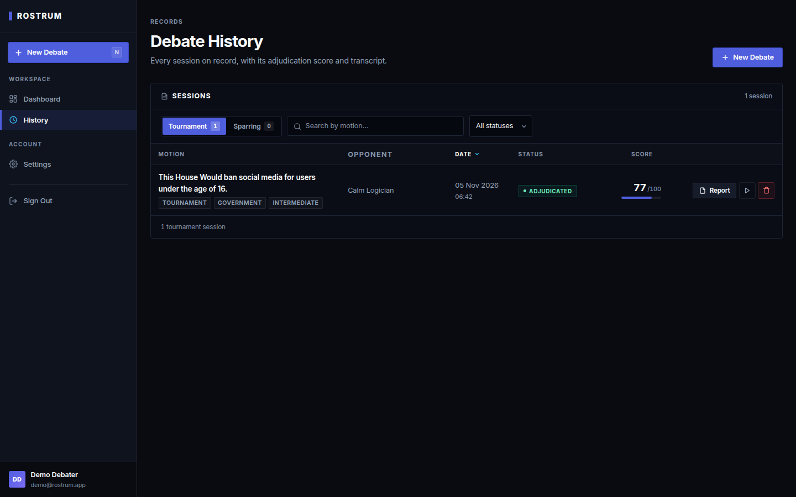

01 · The Problem
Between tournaments,
who coaches you?
Competitive debate demands a sparring partner, a coach, and a judge.
01 / SCARCITY
Limited Judged Practice
Weekly club sessions leave solo debaters without structured round feedback.
02 / LANGUAGE GAP
English-Only Tools
Practice platforms overlook native Bangla circuit debaters.
03 / STATIC CHAT
Generic AI Chatbots
Standard LLMs ignore Matter, Manner, and Method rules.
02 · Solution & Intended Users
Debate Sharper.
Score Higher.
An AI sparring opponent, live coach, and formal adjudicator in one bilingual arena.
USER 01
University & School Debaters — Solo prep for AP and WSDC rounds.
USER 02
Bangla Circuit Participants — Bilingual motions, voice, and judging.
USER 03
Public Speaking Learners — Structured reasoning under timed pressure.
rostrum.onrender.com — Landing Page

rostrum.onrender.com/dashboard/setup — Configure Debate Session

03 · Working Demo: Setup
6-Step Session
Configuration
Sign in and configure every axis of the round.
01–02
Language & Motion — English or বাংলা; write or generate with Gemini.
03–04
Side & Persona — Calm Logician, Aggressive Cross-Examiner, Devil's Advocate.
05–06
Difficulty & Format — Beginner to World Champion · Tournament or Sparring.
04 · Working Demo: Live Arena
Speak Aloud.
Debate in Character.
Opening (3m) → Rebuttal (2m) → Closing (2m) with WSDC/AP order reversal.
BRIEF
Slot-Aware Stage Brief — Gemini answers your exact speech in role.
VOICE
ElevenLabs Round-Trip — Scribe STT transcribes; persona voices reply.
rostrum.onrender.com/debates/01a1aa72 — Split-Pane Arena

04b · Mid-Debate Coaching
Live "Improve Argument" Rewrites
Tap Improve argument mid-round for a slot-aware rewrite without altering the scored transcript.
Original Opening Speech
"Studies show a 52% rise in anxiety correlated with social media. We propose a verified age-gate."
Enhanced Version · Cached
"Not coincidence — mechanism: algorithmic loops and cyberbullying drive the surge. Enforce age-gates like France."
- Pre-empted the causation objection.
- Named concrete harm mechanisms and policy precedent.
05 · Working Demo: Adjudication
Official 100-Point
Adjudication Report
One shared rubric drives both the Gemini judge and the printable PDF report.
77/100
STRONG · 8 pts to Distinction
Flags 3 fallacies, verified quotes & practice drill.
rostrum.onrender.com/debates/01a1aa72/feedback — Verdict & Brief

rostrum.onrender.com/debates/01a1aa72/feedback — Findings & Fallacies

06 · Analytics & Resilient Architecture
Practice Telemetry & Fallback Pipeline
rostrum.onrender.com/dashboard/overview

rostrum.onrender.com/dashboard/history

1. Capture
Browser MediaRecorder (WebM)
→
2. Transcribe
ElevenLabs Scribe · Gemini fallback
→
3. Reason
Gemini 3.6 Flash · EN & বাংলা
→
4. Speak Back
ElevenLabs TTS · Google TTS fallback
07 · Incomplete Features & Limitations
What Is Still Incomplete
01 · Bangla TTS
Multilingual voice audio can sound accented in Bengali; transcripts stay clear.
02 · Report Prose
Judge findings are Bangla, but brief and band labels stay English.
03 · Browser & Tier
Requires Chromium MediaRecorder.
ROSTRUM
Debate Sharper.
Score Higher.
Powered by Gemini 3.6 Flash & ElevenLabs Scribe & Voice
rostrum.onrender.com · demo@rostrum.app · password: rostrum-demo